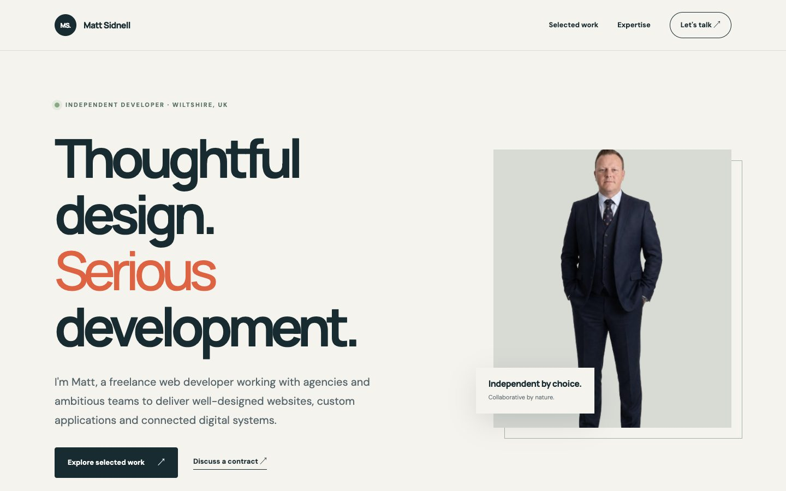
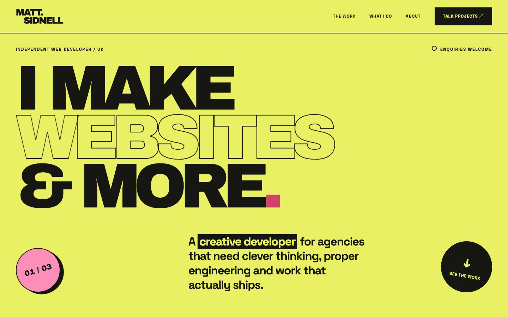
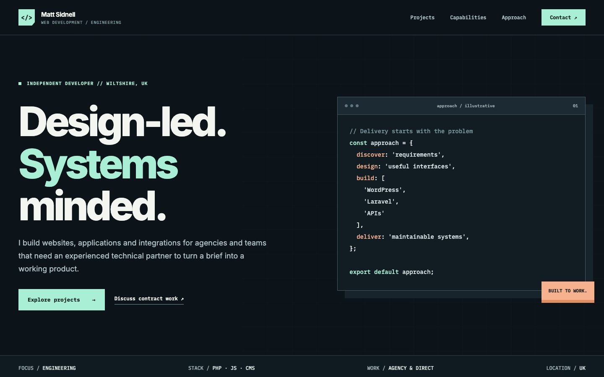

The options
Explore each direction
Select a design to open the full preview.

Concept 01Refined · Personal · Trust led
The Independent
Warm, editorial and reassuring. Makes the developer approachable while giving agencies confidence in delivery and communication.
View this design
Concept 02Bold · Creative · Distinctive
The Studio
A confident creative portfolio with huge type, punchy colours and a fast project-led journey. Designed to stand out to digital agencies.
View this design
Concept 03Technical · Product led · Precise
The Systems Mind
Dark engineering aesthetic, interactive project filters and architecture-focused positioning for specialist build contracts.
View this design